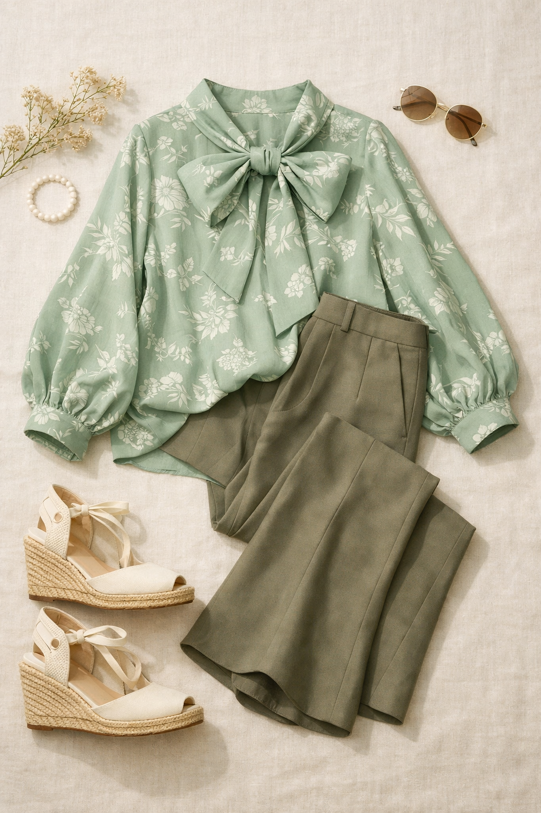

Ann Taylor
Floral Bow Blouse
$109
Billowy elegant blouse with signature oversized bow at neckline. Long sleeves, relaxed flowing silhouette. Sage green botanical floral print — tone-on-tone white flowers on a sage/mint green base. The bow is the detail that makes the whole look intentional rather than accidental.
Shop This ItemWhy This Pick
You already love florals (Daniel Rainn is all over your closet) but this takes it to a new level. The sage green botanical print is nature-inspired and fresh — nothing like your usual dark-base florals. The oversized bow neckline is stylish and intentional, not corporate. This is the blouse that gets compliments in the elevator. Works tucked into the Dried Moss Jayne trouser (Pick #2) for a tonal green moment, or with black pants for clean contrast. The flowing silhouette is especially flattering on your athletic frame — it moves beautifully.
Style It With Your Wardrobe
Flat-lay outfit ideas pairing this piece with items you already own

Head-to-Toe Green Tonal — Editorial
Aqua Foam bow blouse + Dried Moss Jayne trouser (Pick #2) + Cream TOMS wedges (#513). Head-to-toe green tonal is an advanced style move that looks effortless when the tones are as complementary as these two. The cream wedges keep it grounded and prevent the look from going costume-y. This is the outfit that says you have a real point of view.